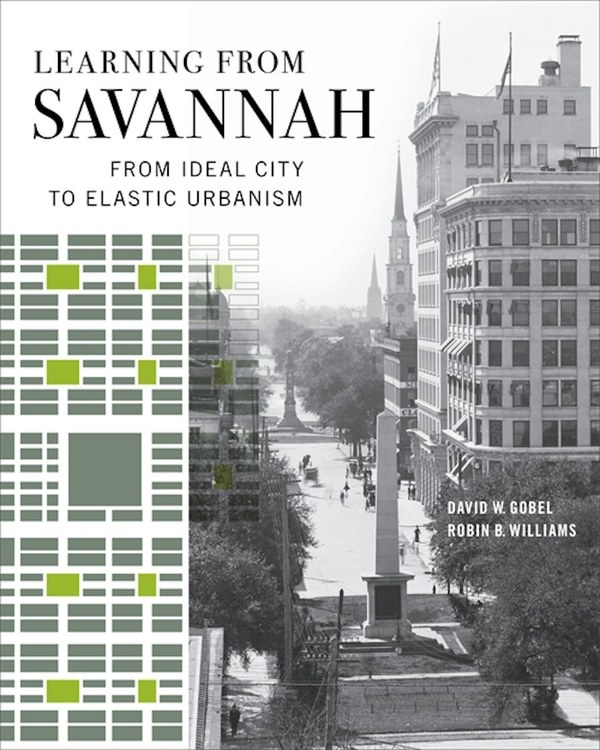

What this page is: our shelf card for one new book. Read our take below, then tap Buy Now.

Learning from Savannah
Savannah's grid of squares is usually told as one man's masterpiece. David Gobel and Robin Williams, longtime architectural historians at the Savannah College of Art and Design, tell it differently. In their account it is a "working plan" (p. 5) that surveyors, engineers and city councils kept stretching for a century and a half, and the book shows how that plan shaped the city's houses, churches, civic buildings, shops and landscape.
Our read: the central idea is clear and convincing: "Savannah is a very real place—it's no utopia—but it bears the unmistakable imprint of the ideal town plan laid out at its founding" (p. 4). The book gets livelier in its second half, on houses, civic buildings, commerce and landscape. That's where you meet 87 cottages built "like the houses on a Monopoly gameboard" (p. 138), "engine-and-caboose" churches (p. 185), the 1871 rock mounds built to keep streetcars out of the squares (p. 244), and Celebration's Savannah Square dismissed as "a stage-set version of Savannah" (p. 296). Our favorite rule of thumb from the book: "Savannah's civic buildings are almost all rule-breakers; the city's houses, however, generally play within the rules" (p. 253).
Good to know: the first half is dense, and the word "elastic" gets a hard workout. The book does record who was shut out of the squares, from the enslaved Africans auctioned at the Vendue House (p. 175) to an 1827 ordinance that barred Black residents from the South Broad Street promenade (p. 240) and the demolition of Yamacraw in the 1930s (p. 265), but these come up as episodes inside the analysis of the plan, not as a through-line.
In short: the smartest book we know on how Savannah's grid actually works, and even better in its back half than its front.
It is 360 pages with 130 color and 70 black-and-white images, including historic maps and the authors' own diagrams of the city. The University of Georgia Press kindly sent us a review copy, and we read it cover to cover. Our page numbers come from that uncorrected copy and may change in the finished book.
On the Atlas: Savannah, Georgia, the city this book is about →
What to do: if you love Savannah's squares, city planning or old buildings, and want to know why the historic town works the way it does, tap Buy Now.
Buy NowTip the Booktender